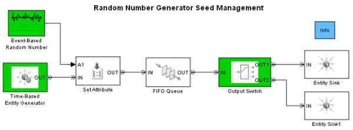

Seed Management Workflow for Random Number Generators
Contents
Overview
This demo describes how to manage sets of seeds for random number generators in a SimEvents® model. Using such an approach, you can experiment with different sets of seeds, and easily switch between different sets of seeds for a single model.
The model shown is a discrete event system in which entities arrive at random times, carry random data and are randomly routed by the Output Switch block to one of two paths.
oldFormat = get(0, 'format'); format long; modelname = 'sedemo_rngseeds_mgmt'; open_system(modelname);
The following blocks in the model use seeded random number generators for their operation:
- Event-Based Random Number
- Time-Based Entity Generator
- Output Switch
Getting Seeds from a Model
The SimEvents function se_getseeds obtains information from a model or subsystem about the seed values and the blocks currently using them.
mySeedSet = se_getseeds(modelname)
mySeedSet =
system: 'sedemo_rngseeds_mgmt'
seeds: [1x3 struct]
This function returns a structure with two fields. The first field, system, contains the name of the model or subsystem from which these seeds were obtained.
The second field, seeds contains information about the seed values and the corresponding blocks. The seeds can be inspected as follows:
[{mySeedSet.seeds.block}' {mySeedSet.seeds.value}']
ans =
'Event-Based Random Number' [12345]
'Output Switch' [12345]
'Time-Based Entity Generator' [ 6548]
As can be seen above, two of the blocks use identical seeds which may cause undesirable effects or incorrect results for stochastic simulations as shown in the demo "Avoiding Identical Seeds for Random Number Generators". The function se_randomizeseeds can alleviate this condition as shown below.
Generating Multiple Sets of Seeds
The SimEvents function se_randomizeseeds makes all the seeds in a model or subsystem unique by randomizing them.
The functions se_randomizeseeds and se_getseeds can be used together as shown to generate multiple sets of seeds for simulation.
% generate one set of seeds and simulate the model se_randomizeseeds(modelname, 'GlobalSeed', 123); newSeedSet1 = se_getseeds(modelname); sim(modelname); % generate a new set of seeds and simulate the model se_randomizeseeds(modelname, 'GlobalSeed', 456); newSeedSet2 = se_getseeds(modelname); sim(modelname); % inspect the generated sets set1 = [{newSeedSet1.seeds.block}' {newSeedSet1.seeds.value}'] set2 = [{newSeedSet2.seeds.block}' {newSeedSet2.seeds.value}']
set1 =
'Event-Based Random Number' [395689]
'Output Switch' [398906]
'Time-Based Entity Generator' [402123]
set2 =
'Event-Based Random Number' [1466947]
'Output Switch' [1470164]
'Time-Based Entity Generator' [1473381]
Switching Between Sets of Seeds
The SimEvents function se_setseeds can be used to switch between different sets of seeds for different simulation runs. The following example applies the seeds contained in newSeedSet1 to the model (which is the system specified in newSeedSet1.system).
% set seeds to newSeedSet1 and simulate the model
oldSeeds = se_setseeds(newSeedSet1)
sim(modelname);
oldSeeds =
system: 'sedemo_rngseeds_mgmt'
seeds: [1x3 struct]
In addition the function se_setseeds returns all of the original seed values in the model in the variable oldSeeds. In case we need to revert changes then the function se_setseeds can be used again with the variable oldSeeds as the input argument.
format(oldFormat); clear modelname clear mySeedSet newSeedSet1 newSeedSet2 oldSeeds clear set1 set2 ans
Related Demos
bdclose('sedemo_rngseeds_mgmt');